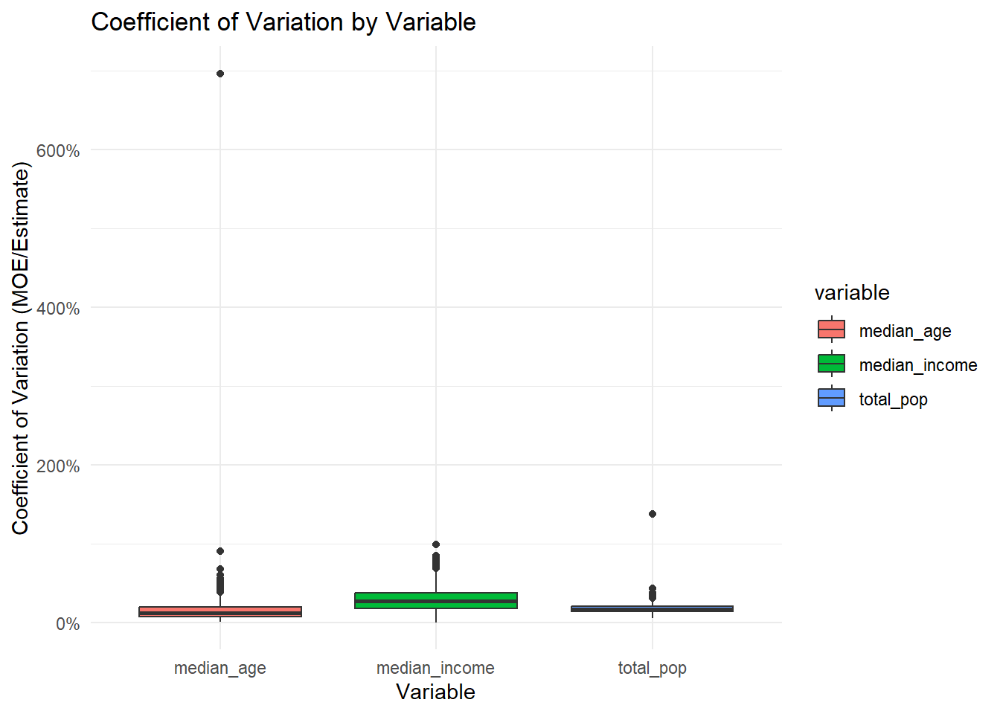

Assignment 1: Census Data Quality for Policy Decisions
Evaluating Data Reliability for Algorithmic Decision-Making
Author
Zhe Fang
Published
October 14, 2025
Assignment Overview
Scenario
You are a data analyst for the Pennsylvania Department of Human Services. The department is considering implementing an algorithmic system to identify communities that should receive priority for social service funding and outreach programs. Your supervisor has asked you to evaluate the quality and reliability of available census data to inform this decision.
Drawing on our Week 2 discussion of algorithmic bias, you need to assess not just what the data shows, but how reliable it is and what communities might be affected by data quality issues.
Learning Objectives
Apply dplyr functions to real census data for policy analysis
Evaluate data quality using margins of error
Connect technical analysis to algorithmic decision-making
Identify potential equity implications of data reliability issues
Create professional documentation for policy stakeholders
Part 1: Portfolio Integration
This assignment has been integrated into my portfolio website at Assignment 1 Page.
# A tibble: 6 × 4
name label concept geography
<chr> <chr> <chr> <chr>
1 B01001A_001 Estimate!!Total: Sex by Age (Whi… tract
2 B01001A_002 Estimate!!Total:!!Male: Sex by Age (Whi… tract
3 B01001A_003 Estimate!!Total:!!Male:!!Under 5 years Sex by Age (Whi… tract
4 B01001A_004 Estimate!!Total:!!Male:!!5 to 9 years Sex by Age (Whi… tract
5 B01001A_005 Estimate!!Total:!!Male:!!10 to 14 years Sex by Age (Whi… tract
6 B01001A_006 Estimate!!Total:!!Male:!!15 to 17 years Sex by Age (Whi… tract
# A tibble: 6 × 5
GEOID NAME median_age total_pop median_income
<chr> <chr> <dbl> <dbl> <dbl>
1 42101000101 Census Tract 1.01; Philadelphi… 31.9 1947 117250
2 42101000102 Census Tract 1.02; Philadelphi… 31.9 2897 94974
3 42101000200 Census Tract 2; Philadelphia C… 43.1 3486 98994
4 42101000300 Census Tract 3; Philadelphia C… 36.3 3914 95234
5 42101000401 Census Tract 4.01; Philadelphi… 33.7 2675 86293
6 42101000403 Census Tract 4.03; Philadelphi… 45.5 1047 181066
# Histogram of tract-level median incomeggplot(tract_wide, aes(x = median_income)) +geom_histogram(fill ="darkgreen", bins =30, alpha =0.7) +scale_x_continuous(labels = dollar) +labs(title ="Distribution of Median Household Income by Tract",x ="Median Household Income", y ="Count of Tracts")
# Boxplot of coefficients of variation by variabletract_data %>%mutate(cv = moe / estimate) %>%ggplot(aes(x = variable, y = cv, fill = variable)) +geom_boxplot() +scale_y_continuous(labels = percent) +labs(title ="Coefficient of Variation by Variable",x ="Variable", y ="Coefficient of Variation (MOE/Estimate)") +theme_minimal()

Part 5: Policy Recommendations
The analysis shows that census data quality varies across geographies. County-level indicators are generally reliable, but tract-level indicators, especially median income, often have higher margins of error. Communities with smaller populations tend to have less precise estimates, raising risks of inequitable resource allocation.
Recommendations:
Use county-level data when feasible for stable decision-making.
For tract-level analyses, flag areas with CV > 15% as less reliable.
Supplement ACS estimates with administrative records or surveys for high-uncertainty tracts.
Document uncertainty in reports so stakeholders understand the limits of the data.
Monitor outcomes if algorithms are deployed, to ensure disadvantaged communities are not further marginalized.
Technical Notes
ACS 5-year estimates (2022) were used.
All analyses conducted in R with the tidycensus and tidyverse packages.
Census API key stored securely via environment variable.